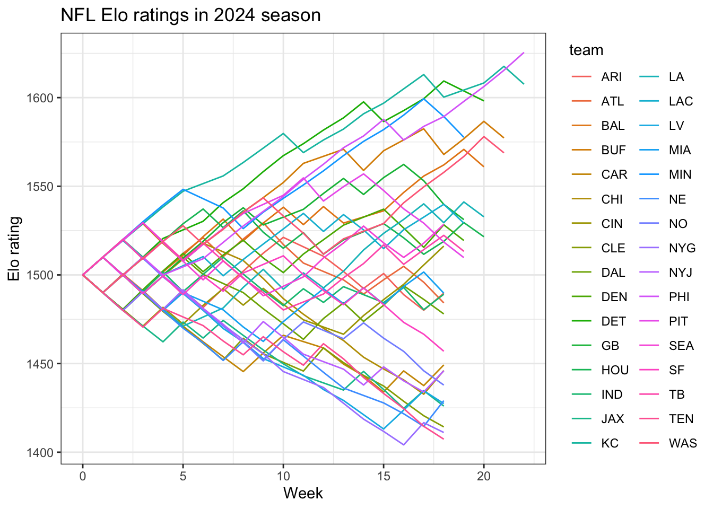

The purpose of this demo is walk through the basics of Elo ratings, with a simple implementation from scratch. We’ll just consider a dataset containing the outcomes of NFL games from the most recent 2024-25 season, including regular season and playoffs. You can find this dataset under demos/week11 as nfl_2425_games.csv. The following code chunk reads in the dataset and displays the columns which are self-explanatory:
# A tibble: 285 × 7
game_id game_type week home_team away_team home_score away_score
<chr> <chr> <dbl> <chr> <chr> <dbl> <dbl>
1 2024_01_BAL_KC REG 1 KC BAL 27 20
2 2024_01_GB_PHI REG 1 PHI GB 34 29
3 2024_01_PIT_ATL REG 1 ATL PIT 10 18
4 2024_01_ARI_BUF REG 1 BUF ARI 34 28
5 2024_01_TEN_CHI REG 1 CHI TEN 24 17
6 2024_01_NE_CIN REG 1 CIN NE 10 16
7 2024_01_HOU_IND REG 1 IND HOU 27 29
8 2024_01_JAX_MIA REG 1 MIA JAX 20 17
9 2024_01_CAR_NO REG 1 NO CAR 47 10
10 2024_01_MIN_NYG REG 1 NYG MIN 6 28
# ℹ 275 more rows
Note the game_type column indicates if the game was during the regular season (REG), or during the playoffs with the different values indicating the different playoff rounds:
table(nfl_games$game_type)
CON DIV REG SB WC
2 4 272 1 6
The week column just increases in the correct order, which will make this process easy for us.
We’ll easily be able to use this data for generating Elo ratings over the course of the NFL season. The first step we need to take is create a column denoting whether the home team won (1), tied (0.5), or lost (0) with mutate and case_when:
We’re going to consider the basic version of Elo ratings covered in wikipedia. Let the rating for the home team be \(R_{\text{home}}\) and the away team rating be \(R_{\text{away}}\). Then the expected score for the home team is:
\[
E_{\text{home}} = \frac{1}{1+10^{\left(R_{\text{away}}-R_{\text{home}}\right) / 400}}
\] and the similar quantity for the away team is:
\[
E_{\text{away}} = \frac{1}{1+10^{\left(R_{\text{home}}-R_{\text{away}}\right) / 400}}
\]The 400 and 10 basically determine the scaling of the ratings and can be modified, as discussed in lecture. These expected scores represent the probability of winning plus half the probability of drawing, but for our purposes we can treat these basically as the probability of winning.
We then update the ratings for the home team if they scored \(S_{\text{home}}\) points:
\[
R^{\text{new}}_{\text{home}} = R_{\text{home}} + K \cdot (S_{\text{home}} - E_{\text{home}})
\] where \(K\) is known as the update factor. This is a tuning parameter, which should be selected via out-of-sample performance. For now we’ll just consider \(K = 20\), to represent the maximum number of Elo rating points a team gains from winning a single game.
To simplify this process, we’re going to create two helper functions to calculate both the expected score and new rating for a team given observed outcome:
The functions are demonstrated below using an example where a team with a rating of 1400 beats a team with a rating of 1600, such that an observed score of 1 indicates a win (versus 0.5 for draw and 0 for loss):
# First the expected score, ie win probability for the team of interest:calc_expected_score(1400, 1600)
[1] 0.2402531
# And now throw that into the calc_new_rating function:calc_new_rating(1400, 1, calc_expected_score(1400, 1600))
[1] 1415.195
The above indicates that the team with a rating of 1400 only had an estimated probability of winning at 24%, but then after beating the team with a rating of 1600 their Elo rating increases to about 1415.
Elo ratings for 2024-25 NFL season
Now with the basics, let’s move on to perform these calculations over the entire season, updating our table to include each team’s Elo rating following every game. We can implement this using a for loop to proceed through each game in the nfl_games table, .ooking up each team’s previous ratings and performing the above calculations.
Prior to beginning this loop, we will set-up a table initializing each team with a rating of 1500. This a naive approach since we likely have prior knowledge about each team’s strength before the start of the season, but we’ll address that later. The code chunk below initializes this starting table of ratings:
# A tibble: 32 × 3
team elo_rating week
<chr> <dbl> <dbl>
1 KC 1500 0
2 PHI 1500 0
3 ATL 1500 0
4 BUF 1500 0
5 CHI 1500 0
6 CIN 1500 0
7 IND 1500 0
8 MIA 1500 0
9 NO 1500 0
10 NYG 1500 0
# ℹ 22 more rows
The following code chunk proceeds to loop through and compute the ratings for each team after each game:
for (game_i in1:nrow(nfl_games)) {# Which teams are we looking at? home_team <- nfl_games$home_team[game_i] away_team <- nfl_games$away_team[game_i]# What was the observed score by the home team? home_score <- nfl_games$game_outcome[game_i]# Week number? game_week <- nfl_games$week[game_i]# What was each team's rating from their latest game? home_rating <- nfl_elo_ratings |>filter(team == home_team) |># Sort in descending orderarrange(desc(week)) |># Grab the latest gameslice(1) |># Just return the elo ratingpull(elo_rating)# Same thing for away team away_rating <- nfl_elo_ratings |>filter(team == away_team) |>arrange(desc(week)) |>slice(1) |>pull(elo_rating)# Now get their new ratings: new_home_rating <-calc_new_rating(home_rating, home_score, calc_expected_score(home_rating, away_rating))# Opposite for away team: new_away_rating <-calc_new_rating(away_rating, 1- home_score, calc_expected_score(away_rating, home_rating))# Finally - join to the nfl_elo_ratings table each team's new ratings for the week: updated_ratings <-tibble(team =c(home_team, away_team),elo_rating =c(new_home_rating, new_away_rating),week =rep(game_week, 2)) nfl_elo_ratings <- nfl_elo_ratings |>bind_rows(updated_ratings)}
We can view the final rating for each team pretty easily:
# A tibble: 32 × 2
team final_rating
<chr> <dbl>
1 PHI 1626.
2 KC 1608.
3 DET 1598.
4 MIN 1578.
5 BUF 1577.
6 WAS 1569.
7 BAL 1561.
8 LA 1533.
9 GB 1531.
10 LAC 1529.
# ℹ 22 more rows
And now let’s examine what these ratings look like over the course of the season:
nfl_elo_ratings |>ggplot(aes(x = week, y = elo_rating, color = team)) +geom_line() +theme_bw() +labs(x ="Week", y ="Elo rating",title ="NFL Elo ratings in 2024 season")

This is obviously an ugly plot… instead one could take advantage of the team colors available using the load_teams function. This is a little more involved, while I won’t walk through this code step-by-step, here is how one could highlight each division:
library(nflreadr)nfl_team_colors <-load_teams() |> dplyr::select(team_abbr, team_division, team_color)# Create a dataset that has each team's final Elo ratingnfl_team_final <- nfl_elo_ratings |>group_by(team) |>summarize(week =max(week),elo_rating = elo_rating[which.max(week)],.groups ="drop") |>inner_join(nfl_team_colors, by =c("team"="team_abbr")) |>arrange(desc(elo_rating))# Need ggrepel:library(ggrepel)
Warning: package 'ggrepel' was built under R version 4.2.3
division_plots <-lapply(sort(unique(nfl_team_final$team_division)),function(nfl_division) { # Pull out the teams in the division division_teams <- nfl_team_final |>filter(team_division == nfl_division) |>mutate(team =fct_reorder(team, desc(elo_rating))) # Get the Elo ratings data just for these teams: division_data <- nfl_elo_ratings |>filter(team %in% division_teams$team) |>mutate(team =factor(team,levels =levels(division_teams$team))) |># Make text labels for them:group_by(team) |>mutate(team_label =if_else(week ==max(week),as.character(team), NA_character_)) |>ungroup()# Now make the full plot nfl_elo_ratings |># Plot all of the other teams as gray lines:filter(!(team %in% division_teams$team)) |>ggplot(aes(x = week, y = elo_rating, group = team)) +geom_line(color ="gray", alpha =0.5) +# But display the division teams with their colors:geom_line(data = division_data,aes(x = week, y = elo_rating, group = team,color = team)) +geom_label_repel(data = division_data,aes(label = team_label,color = team), nudge_x =1, na.rm =TRUE,direction ="y") +scale_color_manual(values = division_teams$team_color, guide ="none") +theme_bw() +labs(x ="Week", y ="Elo rating",title =paste0("Division: ", nfl_division)) })# Display the grid of plots with cowplot!library(cowplot)
Warning: package 'cowplot' was built under R version 4.2.3
Attaching package: 'cowplot'
The following object is masked from 'package:lubridate':
stamp
Rather than using 1500 as the initial values for every team, you could use a more informed starting point such as Neil Paine’s NFL Elo ratings which start at the beginning of the league history. The code chunk below reads in this data, but I’ll leave it as an exercise for you to grab the ratings at the end of the 2023-24 season to use as initial values for 2024-25:
Rows: 35898 Columns: 18
── Column specification ────────────────────────────────────────────────────────
Delimiter: ","
chr (4): Game ID, playoff, team1, team2
dbl (13): season, neutral, is_home, score1, score2, elo1_pre, elo2_pre, elo...
date (1): date
ℹ Use `spec()` to retrieve the full column specification for this data.
ℹ Specify the column types or set `show_col_types = FALSE` to quiet this message.